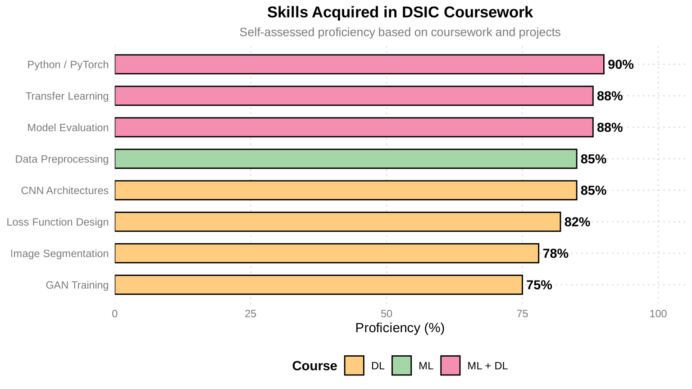

%%{init: {"theme": "base", "themeVariables": {"fontSize": "22px"}, "flowchart": {"nodeSpacing": 20, "rankSpacing": 60, "padding": 30, "useMaxWidth": false}}}%%
flowchart LR
ROOT["DSIC 研究領域 "]
subgraph s1 [" "]
direction LR
ML["機器學習 "] --> ML1["分類與迴歸 "]
ML --> ML2["集成方法 "]
ML --> ML3["特徵工程 "]
end
subgraph s2 [" "]
direction LR
DL["深度學習 "] --> DL1["CNN 與遷移學習 "]
DL --> DL2["GAN 與影像生成 "]
DL --> DL3["語意分割 "]
end
subgraph s3 [" "]
direction LR
CV["電腦視覺 "] --> CV1["醫學影像 "]
CV --> CV2["瑕疵檢測 "]
CV --> CV3["影像重建 "]
end
subgraph s4 [" "]
direction LR
OPT["最佳化 "] --> OPT1["損失函數設計 "]
OPT --> OPT2["超參數調校 "]
end
ROOT --> ML
ROOT --> DL
ROOT --> CV
ROOT --> OPT
style ROOT fill:#E3F2FD,color:#1565C0,stroke:#90CAF9,stroke-width:2px
style ML fill:#E8F5E9,color:#2E7D32,stroke:#A5D6A7,stroke-width:2px
style DL fill:#FFF3E0,color:#E65100,stroke:#FFCC80,stroke-width:2px
style CV fill:#F3E5F5,color:#6A1B9A,stroke:#CE93D8,stroke-width:2px
style OPT fill:#FCE4EC,color:#C62828,stroke:#F48FB1,stroke-width:2px
style ML1 fill:#E8F5E9,color:#2E7D32,stroke:#A5D6A7
style ML2 fill:#E8F5E9,color:#2E7D32,stroke:#A5D6A7
style ML3 fill:#E8F5E9,color:#2E7D32,stroke:#A5D6A7
style DL1 fill:#FFF3E0,color:#E65100,stroke:#FFCC80
style DL2 fill:#FFF3E0,color:#E65100,stroke:#FFCC80
style DL3 fill:#FFF3E0,color:#E65100,stroke:#FFCC80
style CV1 fill:#F3E5F5,color:#6A1B9A,stroke:#CE93D8
style CV2 fill:#F3E5F5,color:#6A1B9A,stroke:#CE93D8
style CV3 fill:#F3E5F5,color:#6A1B9A,stroke:#CE93D8
style OPT1 fill:#FCE4EC,color:#C62828,stroke:#F48FB1
style OPT2 fill:#FCE4EC,color:#C62828,stroke:#F48FB1
style s1 fill:none,stroke:none
style s2 fill:none,stroke:none
style s3 fill:none,stroke:none
style s4 fill:none,stroke:none
資料科學與資訊計算碩士
資料科學與資訊計算研究所 · 國立中興大學
學歷： 理學碩士，國立中興大學資料科學與資訊計算研究所（Master of Science in Data Science and Information Computing, NCHU）。
關於本所
資料科學與資訊計算研究所隸屬於國立中興大學理學院，成立宗旨為培育兼具資料科學理論基礎與資訊計算實作能力的跨領域人才。課程涵蓋機器學習、深度學習、巨量資料分析、影像處理、最佳化方法與高效能計算，強調「從數學到實作」的完整訓練流程。
本所整合數學基礎與現代計算技術，培養機器學習、深度學習、電腦視覺與巨量資料分析領域的專業人才。學生將具備銜接理論模型與實際應用的能力，應用領域涵蓋醫療、工業與科學研究。
研究重點領域
顏色圖例： 綠色 = 機器學習、橘色 = 深度學習、紫色 = 電腦視覺、粉色 = 最佳化。以上為課程涵蓋的主要研究領域。
習得技能

技能來源： 粉色 = 機器學習與深度學習課程共同訓練的技能、藍綠色 = 主要來自機器學習課程、橘色 = 主要來自深度學習課程。兩門課程皆以 Python（搭配 PyTorch）實作，遷移學習與模型評估也在課程中反覆練習。
修課內容
機器學習與資料科學
課程重點： 監督式／非監督式學習、模型評估、特徵工程、資料前處理
作業：
- HW1 – 糖尿病預測： Pima Indians 糖尿病預測。迴歸填補 → 特徵工程 → DNN，從基線 74% 提升至 90.04%
- HW2 – 美國野火分析： 188 萬筆野火紀錄。Poisson 迴歸趨勢分析 + MLP 起火原因分類（45.6%）
- 期末 – 子宮頸癌篩檢： EfficientNet-B7 遷移學習 + Focal Loss，三類別影像分類，平均 86.1%
主要工具： Python · Keras · scikit-learn · statsmodels · PyTorch（期末）
深度學習
課程重點： CNN 架構、遷移學習、語意分割、影像生成、自編碼器
作業：
- HW1 – AOI 瑕疵分類： ResNet-18 遷移學習，6 類工業瑕疵分類，驗證準確率 96.44%
- HW2 – 視網膜血管分割： U-Net（5 層）+ Focal Tversky Loss，DRIVE 資料集，mIoU 0.351
- HW3 – 視網膜影像重建： 卷積自編碼器，峰值 PSNR 30.84 dB（第 18 個 epoch）
- HW4 – Western Blot 影像生成： 條件式 GAN（生成器 + PatchGAN 判別器），分析 D/G 訓練動態
主要工具： Python · PyTorch · torchvision · Apple Silicon（MPS）
巨量資料分析
課程重點： 核方法加速、大規模最佳化、分散式機器學習
作業：
- 文獻閱讀 – Nyström 方法： 論文閱讀（NIPS 2000），Gram 矩陣低秩近似，O(n^3) → O(m^2n)
- HW – Kernel Ridge + Nyström： USPS 手寫數字分類，m=128 達成 20 倍加速，準確率 99.50%
- 期末 – Smoothed & Distributed SVM： a9a 資料集，Smoothed Hinge Loss + 分散式梯度聚合（K=5 個 worker），150 倍加速
主要工具： Python · NumPy · scikit-learn · SciPy（L-BFGS-B）
資料分析數學
課程重點： SVD 理論與應用、低秩矩陣近似、Eckart-Young 定理、手寫數字辨識
作業：
- HW1 – SVD 影像壓縮： 以照片驗證 Eckart-Young 定理，Monte Carlo 近似 2-norm，PSNR 達 44.7 dB（k=700）
- HW2 – 手寫數字辨識： USPS 資料集，比較 8 種方法（Mean / Enhanced Mean / SVD / HOSVD / SVM / KNN / RF / CNN），CNN 95.76% 最高
主要工具： Python · NumPy · PyTorch · tensorly · scikit-learn
專案亮點
| 課程 | 專案 | 亮點 |
|---|---|---|
| 機器學習 | 糖尿病預測 | 基線 74% → 90.04%（+16 pp） |
| 野火分析 | 188 萬筆紀錄 · Poisson 趨勢 + MLP 分類 | |
| 子宮頸癌篩檢 | EfficientNet-B7 + Focal Loss · 86.1% | |
| 深度學習 | AOI 瑕疵檢測 | ResNet-18 遷移學習 · 96.44% |
| U-Net 分割 | mIoU 0.351 · 視網膜血管語意分割 | |
| 自編碼器 | 影像重建 PSNR 30.8 dB | |
| cGAN Blot 生成 | 條件式 GAN 合成 Western blot 影像 | |
| 巨量資料 | Nyström 近似 | Kernel Ridge 20 倍加速 |
| Smoothed SVM | Hinge Loss 平滑化 · 梯度法求解 | |
| 分散式 SVM | 分散式計算 150 倍加速 | |
| 資料分析數學 | SVD 影像壓縮 | Eckart-Young 驗證 · PSNR 44.7 dB |
| 數字辨識（8 種模型） | CNN 95.76% · KNN 最具性價比 |
學習歷程： 從資料分析數學的數學基礎（SVD、矩陣近似）→ 機器學習課程的經典模型（迴歸、DNN、遷移學習）→ 深度學習課程的進階架構（U-Net、自編碼器、GAN）→ 巨量資料課程的大規模加速方法（Nyström、Smoothed SVM、分散式計算）。每個專案皆涵蓋完整流程——從資料前處理、模型設計、訓練，到結果分析與視覺化。